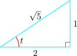

2.17 Curvature when a Curve is given in Parametric Form
Let the curve be given in parametric form, say \(x = x(t)\) and \(y = y(t)\)
\[\frac {dy}{dx} = \frac {dy}{dt}\cdot \frac {dt}{dx}\]
\begin {align*} \frac {d^y}{dx^2} = \frac {d}{dx}\Bigg (\dfrac {dy/dt}{dx/dt}\Bigg ) & =\frac {\dfrac {dx}{dt}\Bigg [\dfrac {d}{d}\Bigg (\dfrac {dy}{dt}\Bigg )\Bigg ]- \dfrac {dy}{dt}\Bigg [\dfrac {d}{dx}\Bigg (\dfrac {dx}{dt}\Bigg )\Bigg ] }{\Bigg [\dfrac {dx}{dt}\Bigg ]^2}\\\\ & = \frac {\dfrac {dx}{dt}\Bigg [\dfrac {d^2y}{dt^2}\cdot \dfrac {dt}{dx}\Bigg ]-\dfrac {dy}{dt}\Bigg [\dfrac {d^2x}{dt^2}\cdot \dfrac {dt}{dx}\Bigg ]}{\Bigg [\dfrac {dx}{dt}\Bigg ]^2}\\\\ & = \frac {\Bigg (\dfrac {dx}{dt}\cdot \dfrac {d^2y}{dt^2}- \dfrac {dy}{dt}\cdot \dfrac {d^2x}{dt}\Bigg )\hspace {0.1cm}\dfrac {dt}{dx}}{\Bigg [\dfrac {dx}{dt}\Bigg ]^2}\\\\ & = \frac {\Bigg (\dfrac {dx}{dt}\cdot \dfrac {d^2y}{dt^2}- \dfrac {dy}{dt}\cdot \dfrac {d^2x}{dt}\Bigg )}{\Bigg [\dfrac {dx}{dt}\Bigg ]^3}\\ \end {align*}
\[\text {i.e}\hspace {0.5cm} \frac {d^2y}{dx^2} = \frac {x'(t)y''(t) - y'(t)x''(t)}{\big [x'(t)\big ]^3}\]
Replacing in the formula for \(\rho \), we have \[\rho = \frac {\Bigg [ 1 + \Bigg (\dfrac {y'(t)}{x'(t)}\Bigg )^2\Bigg ]^{\dfrac {3}{2}}}{\dfrac {x'(t)y''(t) - y'(t)x''(t)}{\big [x'(t)\big ]^3}}\]
Which reduces to \(\displaystyle {\rho = \frac {\Big [\big [x'(t)\big ]^2 + \big [y'(t)\big ]^2\Big ]^{\dfrac {3}{2}}}{x'(t)y''(t) - y'(t)x''(t)}}\)
\[\text {thus}\hspace {0.5cm} K = \frac {x'(t)y''(t) - y'(t)x''(t)}{\Big [x'(t)^2 + y'(t)^2\Big ]^{\dfrac {3}{2}}}\]
The point \(P\) lies in the first quadrant at \(t = \arctan \dfrac {1}{2}\hspace {0.2cm}, \hspace {0.2cm} \) on he ellipse with equation
\(x(t) = 3\cos t\hspace {0.2cm} , \hspace {0.2cm} y(t) = 2\sin t\hspace {0.2cm} , \hspace {0.2cm} 0 \leq t \leq 2\pi \).
Find the radius of curvature at \(P\).
Solution. \[x(t) = 3\cos t \hspace {0.2cm} \implies \hspace {0.2cm} x'(t) = -3\sin t\hspace {0.2cm} \implies \hspace {0.2cm} x''(t) = -3\cos t\]
\[y(t) = 2\sin t \hspace {0.2cm} \implies \hspace {0.2cm} y'(t) = 2\cos t \hspace {0.2cm} \implies \hspace {0.2cm} y''(t) = -2\sin t\]
Now \(\hspace {0.3cm} t = \arctan \dfrac {1}{2}\hspace {0.2cm} \implies \hspace {0.2cm} \tan t = \dfrac {1}{2}\).

\(\implies \hspace {0.5cm} \sin t = \dfrac {1}{\sqrt {5}}\hspace {0.4cm}\) and \(\hspace {0.4cm} \cos t = \dfrac {2}{\sqrt {5}}\)
Hence, at \(\hspace {0.3cm} t = \arctan \dfrac {1}{2}\)
\[x' = \frac {-3}{\sqrt {5}}\hspace {0.2cm} , \hspace {0.2cm} y' = \frac {4}{\sqrt {5}}\hspace {0.2cm} , \hspace {0.2cm} x'' = \frac {-6}{\sqrt {5}}\hspace {0.2cm} \text {and} \hspace {0.2cm} y'' = \frac {-2}{\sqrt {5}}\]
Therefore, the radius of curvature \begin {align*} \rho & = \frac {\Big [\big [x'(t)\big ]^2 + \big [y'(t)\big ]^2\Big ]^{\dfrac {3}{2}}}{x'(t)y''(t) - y'(t)x''(t)} = \frac {\Big (\dfrac {9}{5} + \dfrac {16}{5}\Big )}{\Big (\dfrac {6}{5} + \dfrac {24}{5}\Big )} = \frac {5\sqrt {5}}{6}\\ \end {align*}
The curvature \(\hspace {0.2cm} K = \dfrac {6}{5\sqrt {5}}\).
Questions on this section
Stuck on something here? Ask below and it stays attached to this topic.